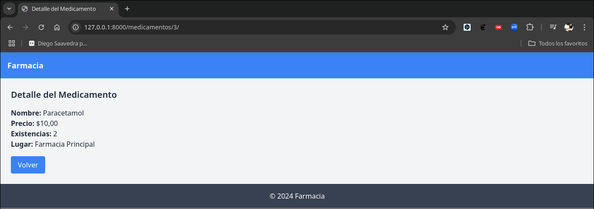

Sistema de Herencia de PlantiLLas, Tailwindcss y Archivos Estáticos.

En este capítulo, vamos a mejorar la estructura de plantillas de nuestra aplicación de Farmacia, aprovechando el sistema de herencia de plantillas de Django, la integración de Tailwind CSS, la generación del directorio static/ y su configuración en settings.py.
El objetivo es mejorar el diseño de nuestras plantillas HTML mediante el uso de Tailwind CSS y organizar mejor el código, aprovechando la herencia de plantillas. También aseguraremos que todos los archivos estáticos se generen correctamente.
1. Herencia de Plantillas
En Django, podemos usar un sistema de herencia de plantillas para evitar repetir el mismo código en varias vistas. En este caso, crearemos un archivo base, base.html, que servirá como plantilla común para todas nuestras páginas. Las otras plantillas heredarán de este archivo.
<!doctype html>
<html lang="en">
<head>
<meta charset="UTF-8" />
<meta name="viewport" content="width=device-width, initial-scale=1.0" />
<title>{% block title %}Farmacia{% endblock %}</title>
{% load static %}
<link href="{% static 'css/output.css' %}" rel="stylesheet" />
</head>
<body class="bg-gray-100 text-gray-800 min-h-screen flex flex-col">
<header class="bg-blue-500 text-white p-4">
<h1 class="text-lg font-bold">Farmacia</h1>
</header>
<main class="flex-grow p-6">{% block content %}{% endblock %}</main>
<footer class="bg-gray-700 text-white text-center p-4 mt-auto">
<p>© 2024 Farmacia</p>
</footer>
</body>
</html>Este archivo contiene las partes comunes de la página, como el encabezado, el pie de página y el bloque de contenido principal, que puede ser reemplazado por cada plantilla específica.
Otras Plantillas
Ahora vamos a modificar cada una de las plantillas para que hereden de base.html y reemplacen el bloque de contenido principal con su propio contenido.
1. crear_medicamento.html:
{% extends 'base.html' %} {% block title %}Nuevo Medicamento{% endblock %}
{% block content %}
<h2 class="text-xl font-semibold mb-4">Nuevo Medicamento</h2>
{% if messages %}
<div class="mb-4">
{% for message in messages %} {% if message.tags == 'error' %}
<div class="bg-red-500 text-white p-3 rounded mb-2">{{ message }}</div>
{% else %}
<div class="bg-green-500 text-white p-3 rounded mb-2">{{ message }}</div>
{% endif %} {% endfor %}
</div>
{% endif %}
<form method="POST">
{% csrf_token %} {{ form.as_p }}
<button
type="submit"
class="bg-green-500 text-white py-2 px-4 rounded hover:bg-green-600"
>
Guardar
</button>
</form>
<a
href="{% url 'lista_medicamentos' %}"
class="mt-4 inline-block bg-blue-500 text-white py-2 px-4 rounded hover:bg-blue-600"
>
Volver
</a>
{% endblock %}En este archivo, hemos reemplazado el bloque de contenido principal con el formulario para crear un nuevo medicamento. También hemos agregado un bloque para mostrar mensajes de error o éxito.
2. detalle_medicamento.html:
{% extends 'base.html' %} {% block title %}Detalle del Medicamento{% endblock %}
{% block content %}
<h2 class="text-xl font-semibold mb-4">Detalle del Medicamento</h2>
<p><strong>Nombre:</strong> {{ medicamento.nombre }}</p>
<p><strong>Precio:</strong> ${{ medicamento.precio }}</p>
<p><strong>Existencias:</strong> {{ medicamento.existencias }}</p>
<p><strong>Lugar:</strong> {{ medicamento.lugar }}</p>
<a
href="{% url 'lista_medicamentos' %}"
class="mt-4 inline-block bg-blue-500 text-white py-2 px-4 rounded hover:bg-blue-600"
>Volver</a
>
{% endblock %}En este archivo, hemos reemplazado el bloque de contenido principal con los detalles del medicamento y un enlace para volver a la lista de medicamentos.
3. lista_medicamentos.html:
{% extends 'base.html' %} {% block title %}Lista de Medicamentos{% endblock %}
{% block content %}
<h2 class="text-xl font-semibold mb-4">Lista de Medicamentos</h2>
<table class="table-auto w-full border-collapse border border-gray-300">
<thead>
<tr class="bg-gray-200">
<th class="border border-gray-300 px-4 py-2">Nombre</th>
<th class="border border-gray-300 px-4 py-2">Precio</th>
<th class="border border-gray-300 px-4 py-2">Acciones</th>
</tr>
</thead>
<tbody>
{% for medicamento in medicamentos %}
<tr>
<td class="border border-gray-300 px-4 py-2">{{ medicamento.nombre }}</td>
<td class="border border-gray-300 px-4 py-2">
${{ medicamento.precio }}
</td>
<td class="border border-gray-300 px-4 py-2">
<a
href="{% url 'detalle_medicamento' medicamento.id %}"
class="text-blue-500 hover:underline"
>Ver</a
>
<a
href="{% url 'editar_medicamento' medicamento.id %}"
class="text-yellow-500 hover:underline"
>Editar</a
>
<a
href="{% url 'eliminar_medicamento' medicamento.id %}"
class="text-red-500 hover:underline"
>Eliminar</a
>
</td>
</tr>
{% endfor %}
</tbody>
</table>
<a
href="{% url 'crear_medicamento' %}"
class="mt-4 inline-block bg-green-500 text-white py-2 px-4 rounded hover:bg-green-600"
>Crear Medicamento</a
>
{% endblock %}En este archivo, hemos reemplazado el bloque de contenido principal con una tabla que muestra la lista de medicamentos y enlaces para ver, editar o eliminar cada medicamento.
4. editar_medicamento.html:
{% extends 'base.html' %} {% block title %}Editar Medicamento{% endblock %}
{% block content %}
<h2 class="text-2xl font-semibold mb-4">Editar Medicamento</h2>
<form method="post" class="bg-white p-6 rounded shadow-md">
{% csrf_token %} {{ form.as_p }}
<button
type="submit"
class="bg-blue-500 text-white py-2 px-4 rounded hover:bg-blue-600"
>
Guardar
</button>
</form>
<a
href="{% url 'lista_medicamentos' %}"
class="text-blue-500 hover:underline mt-4 inline-block"
>Volver a la lista</a
>
{% endblock %}4. eliminar_medicamento.html:
{% extends 'base.html' %} {% block title %}Confirmar Eliminación{% endblock %}
{% block content %}
<h2 class="text-xl font-semibold text-red-600 mb-4">
¿Estás seguro de que deseas eliminar este medicamento?
</h2>
<p class="mb-4"><strong>{{ medicamento.nombre }}</strong></p>
<form method="post">
{% csrf_token %}
<button
type="submit"
class="bg-red-500 text-white py-2 px-4 rounded hover:bg-red-600"
>
Eliminar
</button>
<a
href="{% url 'lista_medicamentos' %}"
class="ml-4 bg-gray-500 text-white py-2 px-4 rounded hover:bg-gray-600"
>Cancelar</a
>
</form>
{% endblock %}En este archivo, hemos reemplazado el bloque de contenido principal con un mensaje de confirmación para eliminar un medicamento y botones para confirmar o cancelar la acción.
2. Integración de Tailwind CSS
Tailwind CSS es un framework de diseño de bajo nivel que facilita la creación de interfaces elegantes sin necesidad de escribir CSS desde cero. Vamos a configurarlo y utilizarlo en nuestras plantillas.
Es necesario tener nodejs instalado en tu sistema para poder instalar Tailwind CSS.
Para instalar nodejs, puedes seguir las instrucciones en la página oficial de nodejs.
2.1 Instalación de Tailwind CSS
Lo primero que necesitamos es instalar Tailwind CSS globalmente en nuestro sistema. Para ello, utilizaremos npm, el gestor de paquetes de Node.js.
- Instala Tailwind CSS globalmente utilizando npm:
npm install -g tailwindcssAhora es necesario generar un archivo de configuración de Tailwind CSS. Para ello, ejecutamos el siguiente comando en la raíz de nuestro proyecto:
npx tailwindcss initCon el comando anterior se generará un archivo tailwind.config.js en la raíz de nuestro proyecto. Este archivo es necesario para configurar Tailwind CSS y definir las rutas de los archivos HTML y CSS en los que se utilizarán las clases de Tailwind.
2.2 Configuración de Tailwind en Django
Ahora, configuramos Tailwind CSS en nuestra aplicación Django. Los archivos generados estarán dentro de la carpeta static, por lo que debemos asegurarnos de que Django sirva estos archivos correctamente.
static/css/style.css
- Aquí configuramos Tailwind para que lo utilice en nuestras plantillas:
@tailwind base;
@tailwind components;
@tailwind utilities;2.3 Configuración del archivo tailwind.config.js
Este archivo es necesario para configurar las rutas de las plantillas HTML y los archivos CSS en los que Tailwind debe buscar clases CSS dinámicas.
module.exports = {
content: [
"./farmacia/templates/**/*.html", // Ruta a tus plantillas HTML
"./static/js/**/*.js", // Si usas JS que contiene clases dinámicas
"./static/css/**/*.css", // Si tienes más archivos CSS
],
theme: {
extend: {},
},
plugins: [],
};3. Generación del archivo static
Debemos asegurarnos de que el archivo output.css se genere correctamente. Para ello, primero necesitamos configurar y ejecutar Tailwind para generar el archivo CSS final.
3.1 Configuración en settings.py
En settings.py, aseguramos que Django pueda servir archivos estáticos correctamente. Aquí está una parte de la configuración relevante:
# settings.py
import os
from pathlib import Path
BASE_DIR = Path(__file__).resolve().parent.parent
'''
Configuración de templates
'''
TEMPLATES = [
{
'BACKEND': 'django.template.backends.django.DjangoTemplates',
'DIRS': [os.path.join(BASE_DIR, 'farmacia/templates/farmacia')],
'APP_DIRS': True,
'OPTIONS': {
'context_processors': [
'django.template.context_processors.debug',
'django.template.context_processors.request',
'django.contrib.auth.context_processors.auth',
'django.contrib.messages.context_processors.messages',
],
},
},
]
'''
Configuración de archivos estáticos
'''
STATIC_URL = 'static/'
STATICFILES_DIRS = [BASE_DIR / 'static']3.2 Generación de output.css
Ahora, ejecutamos Tailwind para compilar nuestro archivo CSS:
tailwindcss -i ./static/css/style.css -o ./static/css/output.css --watchEste comando toma el archivo style.css, lo procesa con Tailwind y genera el archivo output.css que se incluirá en nuestras plantillas HTML.
4. Estructura de Archivos Final
Tu estructura de archivos debe verse así:
farmacia
├── templates
│ └── farmacia
│ ├── base.html
│ ├── crear_medicamento.html
│ ├── detalle_medicamento.html
│ ├── editar_medicamento.html
│ ├── eliminar_medicamento.html
│ └── lista_medicamentos.html
├── static
│ └── css
│ ├── output.css
│ └── style.css
├── tailwind.config.js
├── manage.py
├── requirements.txt
└── settings.pyConclusión
Con esta configuración hemos logrado:
- Usar herencia de plantillas para evitar la repetición de código en las páginas de la aplicación.
- Integrar Tailwind CSS para mejorar el diseño de las páginas.
- Configurar archivos estáticos en Django y generar el archivo CSS utilizando Tailwind.
Esta configuración asegura una aplicación con un diseño moderno y bien estructurado, facilitando la reutilización de código y mejorando la experiencia del desarrollo en Django.